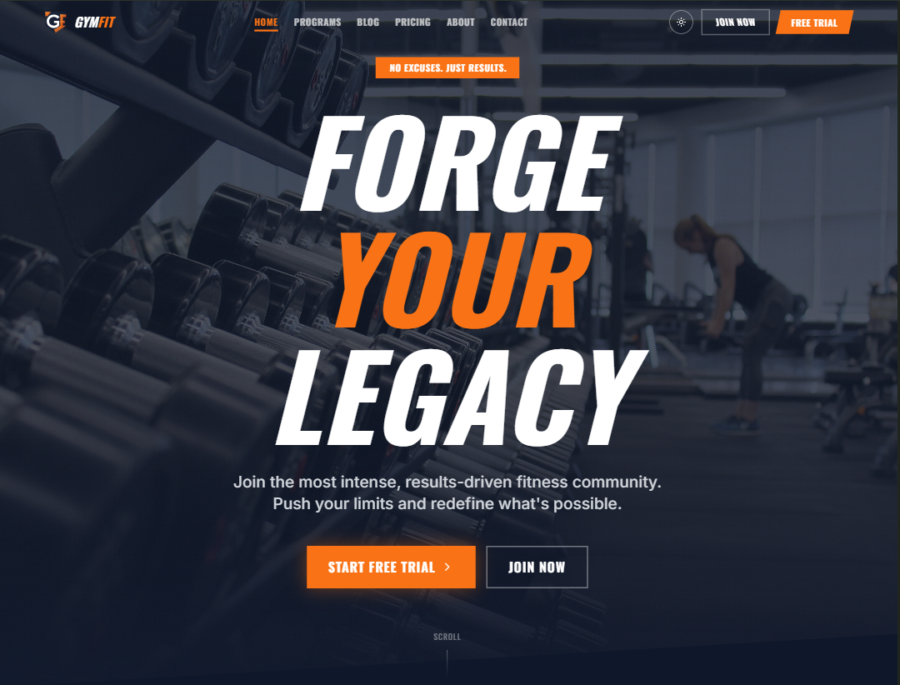
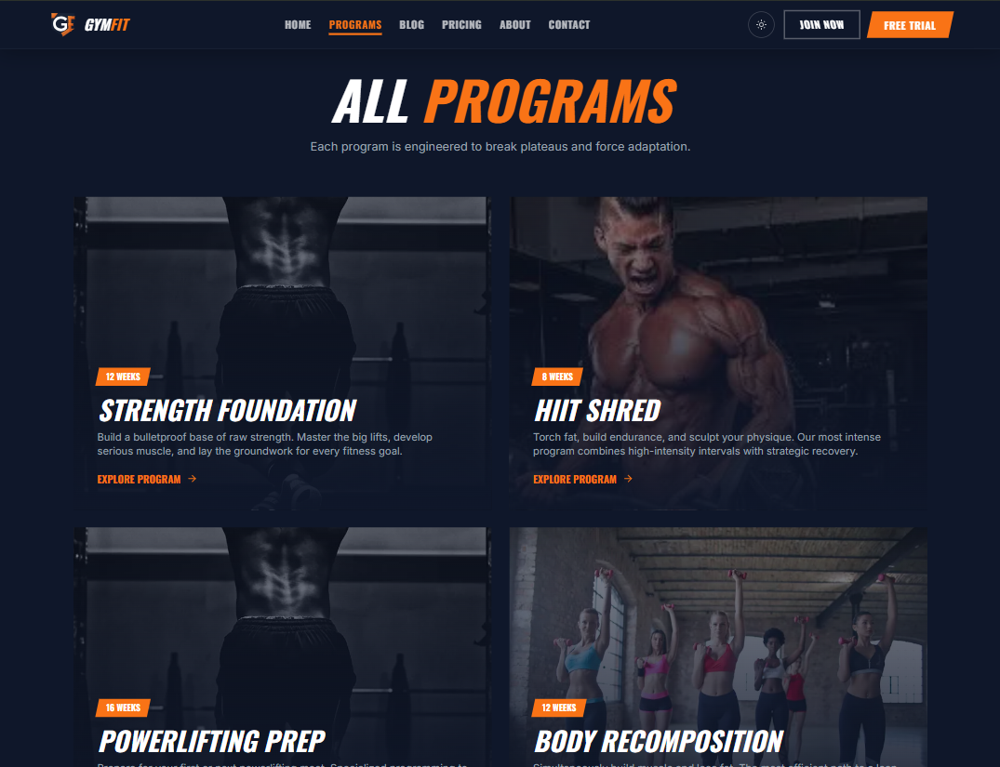
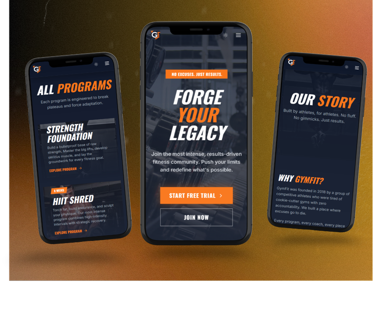

GymFit needed more than just a website — it needed an experience that matched the energy and discipline of its members. The goal was to build a bold, dark-themed platform that showcased training programs, memberships, and interactive tools like a BMI calculator and class schedule.
Industry
Fitness & Gym Membership
Project Type
Gym Website — Full Design & Development
Timeline
Design to deployment, iterative build process
Deliverables
Responsive website · BMI Calculator · Class Schedule · Membership Modal · Live Deployment
The biggest challenge wasn't the visual design — it was building interactive features that felt native to the brand and were actually useful to gym members.
The BMI calculator needed to be accurate, accessible, and visually integrated into the dark theme. The class schedule needed to be scannable at a glance. The membership modal needed to convert — not just inform.
Every interactive element had to feel purposeful and polished, not like an afterthought bolted onto a static page.
Interactive calculator built into the site — users enter their height and weight and get an instant BMI reading with a visual indicator and health category label.
A scannable weekly class schedule showing session times, trainers, and class types — designed to help members plan their week without leaving the site.
A clean pricing modal that presents membership tiers clearly — designed to guide visitors toward signing up with minimal friction and maximum clarity.
Full dark and light mode support — the dark theme leads with intensity and energy, while the light mode keeps the experience clean and accessible.
Key screens from GymFit — hero, BMI calculator, and membership section.

Hero Section
Programs Section
Mobile VersionSet a bold, dark-first visual direction using deep blacks, high-contrast typography, and orange accents to capture the energy and intensity of a serious fitness brand. Designed for impact on first load.
Mapped out the BMI calculator logic, class schedule data structure, and membership modal flow before writing any code. Defined the UX for each interactive component — how it behaves, what it shows, and how it fits into the overall page layout.
Built using React + TypeScript with Vite for a fast, modular codebase. Each interactive feature was built as its own component — BMI calculator with real-time output, schedule with filterable class types, and membership modal with plan comparison.
Implemented full dark/light mode toggle using React state and Tailwind's dark mode utilities. Tested and refined all breakpoints across mobile, tablet, and desktop — ensuring every feature worked smoothly on any screen size.
Chosen for component-based architecture, type safety, and fast development.
A fully responsive, feature-rich gym website with interactive tools, bold visual identity, and dark/light mode support.
Visit the deployed project or go back to the full portfolio.